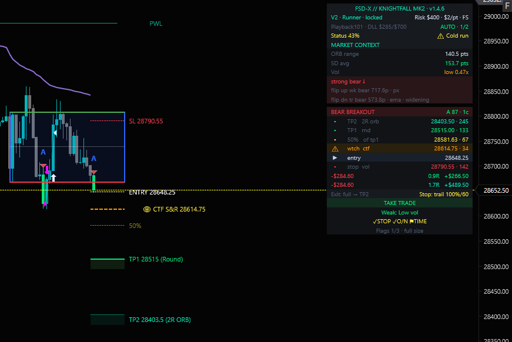
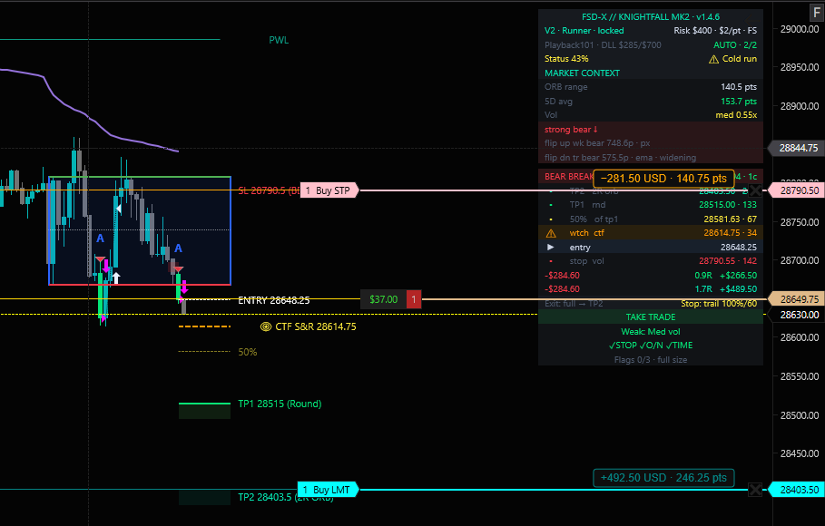
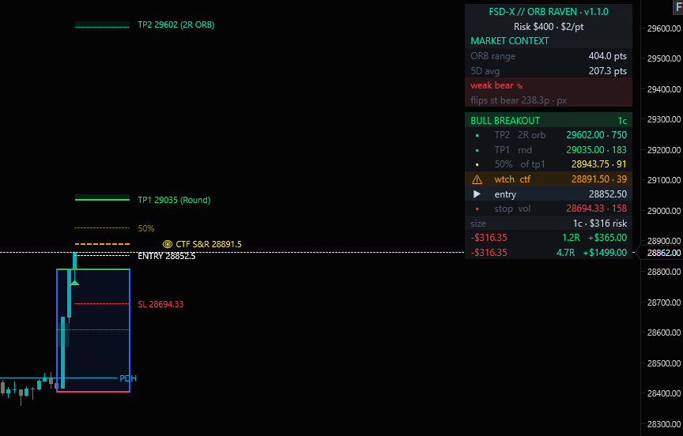
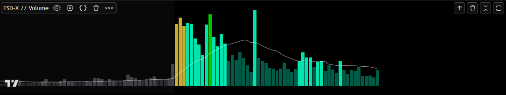
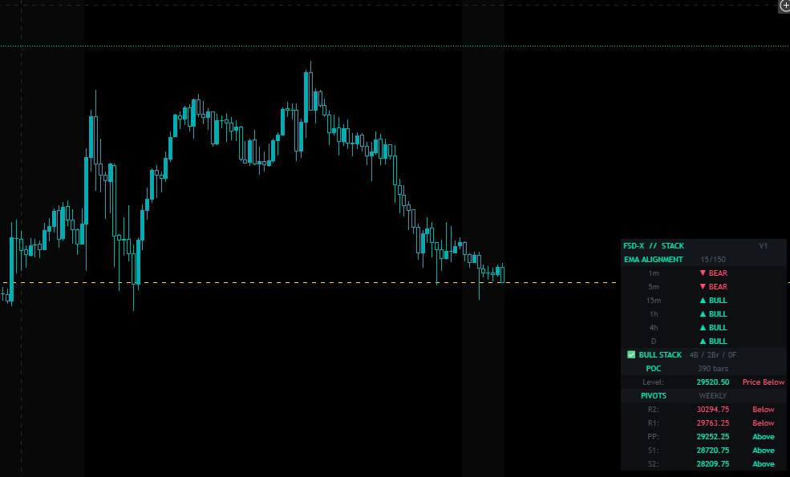
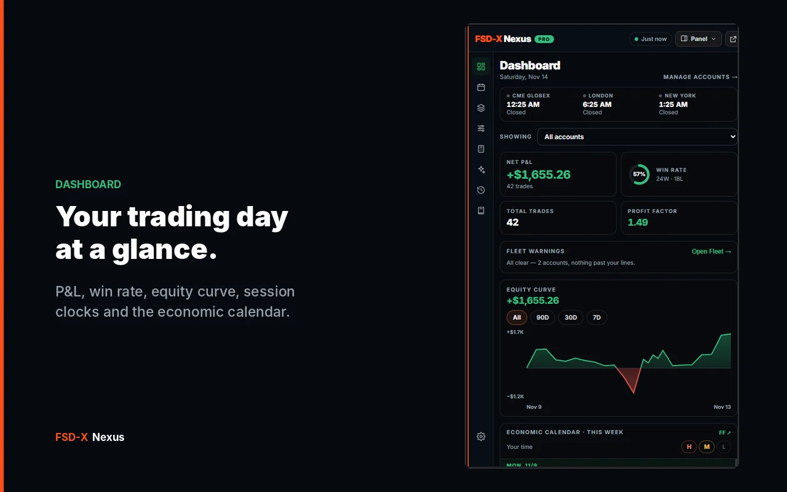
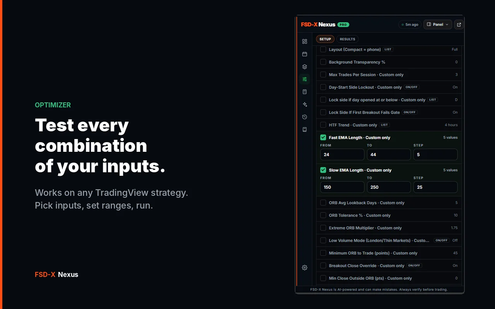
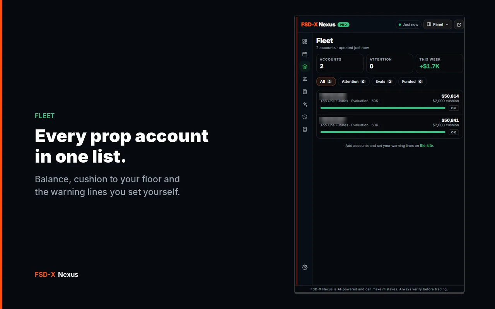
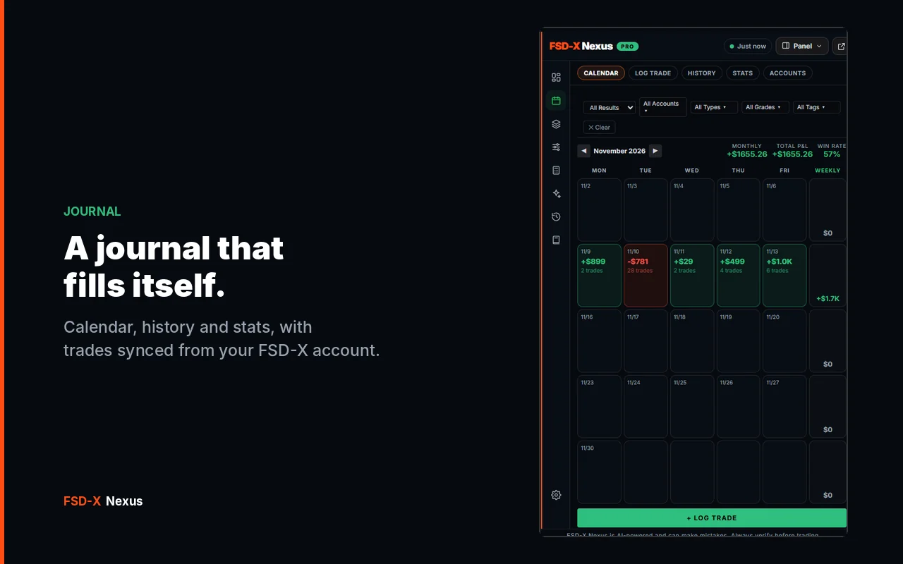
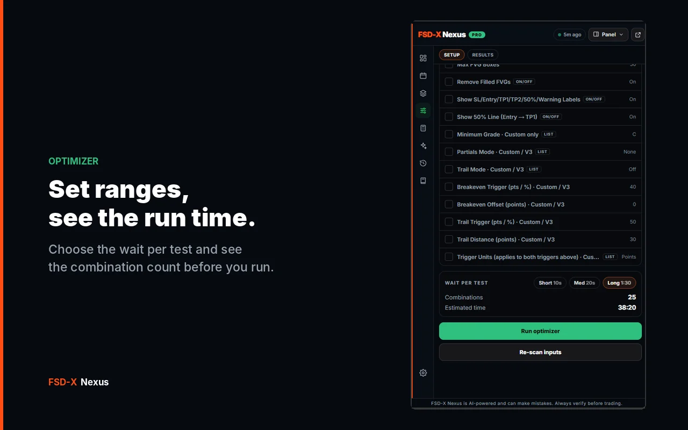

Every tool. Your platform.
Knightfall runs the method. Every other product supports a step of it: context, execution, tracking, and people to trade it with. Run it on TradingView, NinjaTrader® 8, or both. Pick a platform to see exactly what you get there.

The method · 1 to 5Knightfall MK2Grades every opening range breakout A+ to F and only takes A+ through C. On NinjaTrader 8, one system you can trade yourself or run hands-free.
ExecuteAutomationLet Knightfall take and manage the trades. A switch inside Knightfall on NinjaTrader 8, a companion script on TradingView.
Identify · levels onlyORB RavenEvery breakout marked with entry, stop, both targets and your size. No grading. Also sold on its own.
EvaluateVolumeMarks every ORB breakout bar in the volume pane and colors bars by session.
EvaluateStack V1Multi-timeframe trend confirmation across 7 timeframes. MeasureMember platformFleet manager, journal, Tradovate sync, importer and backtest workspace, on this site.
MeasureMember platformFleet manager, journal, Tradovate sync, importer and backtest workspace, on this site.
MeasureNexus 3.0Chrome side panel: a strategy optimizer that runs on any strategy, eval sim, sizing and journal.NinjaTrader® is a registered trademark of NinjaTrader Group, LLC. TradingView is a trademark of TradingView, Inc. Educational software, not financial advice. Futures trading involves substantial risk of loss. Chart screenshots are illustrative; dollar figures on them are position sizing, not results.
FSD-X ORB PRO (Knightfall MK2)
Automation is built in. Turn hands-free on and Knightfall takes and manages the trades. Turn it off and you take them yourself off the same chart. One strategy, nothing else to install.
Knightfall grades the setups and draws the trade on your chart. To automate, add the Auto Trader script, included in the membership. How automation works →
What it does
The core tool. It watches the Nasdaq (NQ / MNQ) at the open on the 5-minute chart and tells you when a breakout is worth taking — with the entry, stop, and target already worked out. Instead of staring at the chart guessing, you get a graded setup to trade.
Every setup is scored before you enter, on four inputs: the higher-timeframe trend state, how this morning's opening range compares to its own recent average, volume against its recent average, and current volatility. The total sets the grade, A+ down to F. Weak mornings grade low so you can leave them alone.
The target isn't a fixed number of points. The script looks for a real level ahead of price to aim at — previous day high/low, weekly high/low, recent swing levels, and fair value gaps.
Some mornings there's no clean level sitting inside the minimum R:R. When that happens the target falls back to a multiple of the opening range itself — 0.5x, 1x or 2x — so you still get a defined target instead of an open trade.
A dashboard sits on the chart showing how the system has done over the period you're looking at — dollar results broken out by grade, profit factor, best and worst streaks, and the deepest drawdown.
Knightfall can now manage the stop after you're in the trade. It used to set the stop once at entry and leave it there. Now the stop can move in your favour as the trade develops: to breakeven, trailing behind price, or breakeven first and then trailing. Same script, nothing extra to install.
Off, Breakeven Only, Trail Only, or Breakeven then Trail. V2 Runner, the default variant, uses Trail Only. V1 Stock keeps it Off.
A fixed number of points, or a percentage of that trade's own first target — so the trigger stays in proportion to the setup in front of you instead of being the same number every morning.
Breakeven doesn't have to mean exactly your fill. Place it slightly into profit so the trade is locked green, or slightly below it as a partial reduction in risk rather than a full move to breakeven.
Runs alongside every Partials Mode — full exit at TP1, partial and runner splits, or full size to TP2. Your targets and contract split are never changed. Only the stop moves, and only ever in your favour.
It's a trade-off, not a free upgrade. A tight trail exits closer to the high of a move but gets stopped out by normal pullbacks; a wide trail survives pullbacks but gives back more when it does exit. Different settings produce genuinely different behaviour — test them in replay before you trade them.
A Quality-Only toggle shows just the A+, A and B+ history. If the lower grades are running negative over the period you're looking at, you can see it at a glance and tighten which grades you're willing to take.
Knightfall MK2 puts the live signals, the grading, and the full backtest in one script, so what you see on the chart and what you see in the backtest always match. Both platforms come with the full membership, along with the live trading room, the companion tools and the VIP Discord channels. On NinjaTrader 8 it's also sold on its own as Knightfall NT8.
Knightfall Automation
Same system, same trades, hands-off. How you switch it on depends on your platform.
No separate product. Turn hands-free on in Knightfall’s settings and it trades for you; turn it off and you take the trades yourself off the same chart.
Knightfall reads the chart; the Auto Trader, a second script in the membership, sends the trades through a bridge service to your broker.
What it does
No hesitating on the entry, no sitting glued to the screen, no talking yourself out of a setup the rules say to take. A graded breakout triggers when the bar closes, using the same A+ to F scoring and the same grade-based sizing as Knightfall. Entry, stop and targets go to your account, and the trade is managed to the exit. It closes out at the end of the session and skips holidays and half-days.
NinjaTrader 8, playback account. Stop and target placed as working orders. Dollar figures are one open position, not a performance result.
Orders go straight from Knightfall to the account you connect. No webhooks, no alert setup, no bridge service to pay for.
A lightweight build of Knightfall that sends each order (direction, contracts, entry, stop, targets) to the automation service you connect, such as PickMyTrade or TradersPost. Needs a TradingView plan with webhook alerts.
Validated against the full Knightfall backtest and matched line for line: same entries, same grade-based sizing, same exits. Both variants are built in. Only the on-chart dashboard is removed.
Stripped to the engine, so it runs clean all session. A slim status readout shows today’s P&L, trades taken and the current position, so you can check in without watching the chart.
Check your firm’s rules first. Brokers and prop firms set their own automation rules. Confirm yours allows it before running it hands-free, and start on a sim or demo account. On TradingView the strategy sends alerts only; execution happens through a third-party service and broker you configure and control.

FSD-X // Stack V1
What it does
A second opinion before you enter. It checks whether the smaller and bigger timeframes agree on direction, so you can skip the breakouts that are fighting the trend. Use it alongside ORB PRO, or on its own.
Reads the EMA trend on seven timeframes at once — 1m, 5m, 15m, 30m, 1h, 4h and Daily. When 60% or more point the same way it calls a BULL STACK or BEAR STACK, so you can see whether the whole board agrees before you pick a side.
Plots the POC — the price where the most volume traded over the lookback you set. It's the level the session actually fought over, so it tells you whether price is working above it or stuck underneath it.
Plots the standard pivots (PP, R1, R2, S1, S2) off the prior day, week or month. Simple, widely watched levels — useful precisely because plenty of other traders are looking at the same ones.
The strongest entries line up: price clears the opening range level, holds above the session POC and the pivot, and the stack reads 6/7 or 7/7 in the same direction. When the timeframes are mixed, size down or sit the morning out.
Fast and slow EMA lengths (20/50 is the recommended pair), an adjustable band that decides when a timeframe counts as flat rather than trending, and switches for which levels show on the chart.
FSD-X // Volume Indicator
What it does
Shows whether real volume is behind the breakout. It marks the exact breakout candle in your volume pane and colors it green or red, so you can see at a glance if the move has strength — no guessing whether it's the real thing.
System Color Key Architecture
Shows whether the breakout candle traded on heavier volume than the session average, or whether the move happened on almost nothing.
Track whether volume keeps up as price runs toward the target, or dries up partway there — the usual tell before a move stalls out.
Marks where the outsized volume bars printed through the regular session, so you can see which candles actually did the work in the move.
Runs in the lower pane under your price chart and lines up with the ORB window the main indicator draws, so the volume bars and the breakout candle read together.
FSD-X // ORB Raven
Every breakout marked, with all the levels drawn — and no opinion about which to take.
Also sold on its own as the Raven tier at $29.99/month. Included here at no extra cost. Compare →
What it does
The same opening range detection, stop placement and target selection as Knightfall — with the selection layer removed. Raven marks every breakout of the range, both directions, and draws the entry, the stop, both targets, the midpoint and a nearby watch level for each one. It does not grade them and it does not filter them.
There is no A+ through F score and no "don't take this one". Every breakout is drawn and the read stays with the trader. For a member who already has their own criteria, a system that overrules them is worse than one that doesn't.
Every target carries the kind of level it came from — prior day or week high and low, chart and higher-timeframe S/R, unfilled fair value gaps, round numbers. You always know what you are aiming at, not just a price.
Contracts from your risk setting and the distance to the stop — plus the real dollar risk, because rounding to a whole contract means the two rarely match. It flags the case where one contract already exceeds your risk.
A second breakout on the same side leaves the previous level set faded on the chart, so a position you still have open stays readable instead of being redrawn away.
No backtest tab, no equity curve, no trade tracking and no automated execution. Raven never finds out what happened after the breakout, so it has no win rate to report. The backtest and live record on this site belong to ORB PRO (Knightfall).
Members who bring their own read and want the levels drawn properly — where the opening range sits, where the stop belongs, where a realistic target is. If you want the system to decide the morning for you, that is Knightfall, above.
What it does
The all-in-one Chrome extension built specifically for prop firm futures traders. Nexus runs as a side panel directly inside TradingView — no tab switching, no extra windows. Everything you need to trade, journal, and analyze is in one place next to your chart.
// Included with the FSD-X membership. Also available on its own in Nightwing, the $9.99 tools tier — platform + Nexus, no indicator suite.
Only the membership's own trial is limited. On the $129 membership Nexus is one part of a much bigger bundle, so its 30-day trial runs on the middle column. Everywhere else the extension is most of what you're paying for, so a trial there would leave you nothing to judge — Nightwing (7-day trial), Raven (7-day trial) and standalone Nexus (3-day trial) all run on full access from day one, trial or not. Longer billing terms have no trial and start on full access immediately.
Opens on a dashboard of your journal — P&L, win rate, profit factor, equity curve, session clocks and the economic calendar — plus every prop account with its cushion and your own warning lines.
Full trade logging with calendar view, P&L tracking, win rate stats, grade filtering, tag system, CSV import/export, multi-account support, and Tradovate trades imported every 30 minutes.
Automates Pine Script backtesting on TradingView. Scans strategy inputs, sets from/to/step ranges, runs all combinations hands-free, keeps the best result on top, applies it to your chart in one tap, and exports to CSV.
Upload up to 3 chart timeframes and get an AI breakdown of structure, bias, key levels, and setup quality. Includes an optional risk calculator.
AI-powered news sentiment scan with Bullish/Bearish/Neutral verdict. Live economic calendar with High/Med/Low impact filters and timezone support.
Futures and Forex calculator with auto-detected $ per point for NQ, MNQ, ES, MES and major FX pairs. Enter your risk and stop — instantly outputs contracts and R:R.
Monte Carlo prop firm pass rate simulator. Supports Apex, TopStep, MFF, E8, or custom rules. Strategy Analyzer breaks down your edge by day, direction, and grade.
Paste raw options flow data and get an instant AI read on institutional positioning — direction bias, block size analysis, and price implications.
Dedicated journaling for manual backtesting sessions — separate from your live journal. Log by session, track P&L on a calendar, and export to CSV.

It sits beside the chart, not in another tab. The Optimizer reads the strategy's own inputs and sweeps them across the ranges you set — here, Knightfall MK2's settings, each with a min, max and step. It works on any TradingView strategy, not just ours.


Install from the Chrome Web Store and unlock it with your member key. It runs on its own — only the Strategy Optimizer needs TradingView open.
It is not a position size calculator with extras
Nexus is a dashboard, a prop account tracker and a set of trading tools in a side panel that sits against the TradingView chart — or in its own window, pinned on top of everything. Most of it has nothing to do with our indicators — it works on whatever you happen to be trading.

The panel sits beside the TradingView chart and stays there while you work — or pop it out into its own window and pin it on top. Above, the Optimizer ready to run: it shows how many combinations you have picked and how long they will take. While it runs, the best result so far sits at the top and one tap applies it to your chart. Optimizer results are hypothetical backtests.
Nexus opens on a dashboard of your journal — net P&L, win rate, profit factor, an equity curve, market session clocks and this week’s economic calendar. Fleet lists every prop account with its balance, the cushion left above your drawdown floor and a status from the warning lines you set on the site. Tradovate trades import every 30 minutes, so both stay current on their own.
Open any TradingView strategy's settings dialog and Nexus reads its inputs straight off the screen. Give each one a minimum, a maximum and a step, run the sweep, and read the combinations back ranked. It is not limited to our scripts — it optimises whatever strategy is on your chart.
Presets for Apex, TopStep, MFF and E8, or set your own account size, daily drawdown, trailing or end-of-day drawdown and profit target. Feed it your journal and it simulates the evaluation, including how the result changes with contract count.
Simulated outcomes from your own past trades. Hypothetical, and not a prediction that any evaluation will pass.
Drop in your entry, confirmation and trend charts and get them read as one picture, with your ticker, strategy and maximum risk as context. It is AI-assisted and it says so in the panel — a second opinion to argue with, not an instruction.
Position calculator for futures and forex, micro or standard, sized off your stop to a target R:R. Plus a watchlist scanner, news headlines, an economic calendar and an options flow reader.
Log a trade without leaving the chart — entry, exit, stop, both targets, tags, notes and a screenshot. Then history and stats: win rate, net P&L, long versus short, performance by day, drawdown from peak. Export to CSV or PDF.
Upload a CSV, keep each run as its own session, and read the results back the same way you read your live record. Sessions sync with the backtest workspace on this site.
Your rules, setups and goals, plus a pre-trade checklist you tick off before entering. Daily rules and drawdown-protection rules live here too, and all of it syncs with the playbook on this site.
The panel and the site are one account, not two
This is the difference between Nexus and every other browser extension you have tried. It is not a standalone tool that happens to share a login — it reads and writes the same data as the platform on this site, both directions, automatically.
Log a trade in the panel while the chart is still in front of you, and it is in your journal on this site before you have closed the tab.
Upload a backtest CSV on the site and the session is there in the panel's Backtest tab, ready to read against the chart.
Your playbook is one list. Rules, setups, goals and the pre-session checklist — tick something off in the panel and the site knows.
Accounts, Fleet and defaults follow you. Tracked accounts, your Fleet warning lines, your usual ticker, timeframe and contract count are set once and apply in both places.
Which is why buying one without the other would not make sense — and why they are never sold apart.
We'd rather you skip the morning than force it.
The opening range breakout isn't ours. It has been traded for decades — anyone can mark the first fifteen minutes and draw the high and the low. Most traders who find us have already worked through a stack of strategies, and the concept was never the part that broke them.
What breaks people is the three decisions the concept doesn't make for you: which breakout is worth taking, where the stop goes, and where the target goes. That's the whole build. FSD-X grades every opening range breakout on the Nasdaq before the entry and hands back the stop and target the rules produce. On plenty of mornings the answer is to stand down — the system is a filter first and a signal second.
The value isn't finding more breakouts. It's knowing which mornings aren't worth trading — and being willing to sit those out.
Switching strategies every few weeks never gives any of them enough trades to judge. We'd rather you run one set of rules long enough to see what it actually does.
Backtested and live results are published separately, red days included. You should be able to check the claim before you decide to trust it.
What we won't do is tell you the outcome. This is a rules-based framework and a room full of people using it — not a promise. Some mornings it is wrong, and those show up in the track record like everything else.
You've seen the tools. Now run them live.
Every tool on this page is included in one membership — plus the daily live trade room. Start with the 30-day free trial.
$129/mo after trial · Cancel anytime in one click via Whop
Not ready yet? Join the free Discord → or book a quick call.
Trading futures involves substantial risk of loss and is not suitable for every investor. Past performance is not necessarily indicative of future results.